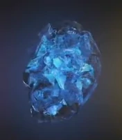

Камини безсконечности
| Name |
Color |
About |
IMG |
| Камень пространства |
Синий |
Камень разума (англ. Mind Stone) - один из шести камней бесконечности, остаток из сингулярности, которая старше Вселенной и представляет она себя тканью Разума. Ранее он находился в скипетре, который нашёл Безумный Титан Танос. После он передал скипетр Локи, чтобы он устроил на Земле Вторжение читаури и нашёл там Тессеракт, но он проиграл Мстителям, и Щ.И.Т. забрала скипетр. Но в Щ.И.Т.е секретно находилась ГИДРА, и Вольфганг фон Штрукер забрал скипетр себе, с помощью его мощи, он создал двух мутантов Алую ведьму и Ртуть. Когда ГИДРА распалась, то скипетр забрали Мстители. После его забрал Альтрон, и он уничтожил синею оболочку камня, чтобы сделать с помощью его Вижена. После камень находился во лбу у Вижена, пока Танос не забрал у него камень и не положил в перчатку бесконечности. |
 |
| Камень разума |
Жёлтый |
Камень разума (англ. Mind Stone) - один из шести камней бесконечности, остаток из сингулярности, которая старше Вселенной и представляет она себя тканью Разума. Ранее он находился в скипетре, который нашёл Безумный Титан Танос. После он передал скипетр Локи, чтобы он устроил на Земле Вторжение читаури и нашёл там Тессеракт, но он проиграл Мстителям, и Щ.И.Т. забрала скипетр. Но в Щ.И.Т.е секретно находилась ГИДРА, и Вольфганг фон Штрукер забрал скипетр себе, с помощью его мощи, он создал двух мутантов Алую ведьму и Ртуть. Когда ГИДРА распалась, то скипетр забрали Мстители. После его забрал Альтрон, и он уничтожил синею оболочку камня, чтобы сделать с помощью его Вижена. После камень находился во лбу у Вижена, пока Танос не забрал у него камень и не положил в перчатку бесконечности. |
 |
| Камень реальности |
Красный |
Камень реальности (англ. Reality Stone) - Камень бесконечности, остаток сингулярности, которая существовала до начала вселенной. Обладая древней и катастрофической силой, Эфир обладает потенциалом трансформировать всю вселенную. Камень был помещён в жидкую оболочку под названием "Эфир" (англ. Aether) (произносится ēTHər), которую Тёмные эльфы и их лидер Малекит хотел использовать, чтобы поглотить Девять миров во тьму.[1] После он был передан к Коллекционеру и хранился в Музее Коллекционера после второго конфликта тёмных эльфов.[2] |
 |
| Камень силы |
Пурпурный |
Камень силы (англ. Power Stone) - один из шести камней бесконечности, остаток из сингулярности, которая старше Вселенной и представляет она себя тканью Силы. Камень силы - один из самых могущественных артефактов во Вселенной, так как он способен убить почти каждое существо, которое прикоснулась к камню. Его использовал Эсон Искатель, который уничтожил целую планету, после камень оказался в Сфере на планете Мораг. Этот камень хотел заполучить Безумный Титан Танос, он послал воина Кри Ронана Обвинителя достать камень, тот в свою очередь послал Кората Преследователя. Но он не смог доставить камень Ронану, так как сферу украл Звёздный Лорд, из-за чего появилась охота на этот камень. Позже Звёздный Лорд создал команду Стражи Галактики, которые передал камень Корпусу Нова. Но через несколько лет, Танос с Чёрным орденом отправились на Ксандар, где они убили половину его населения и взяли камень, Танос положил его в перчатку бесконечности. |
 |
| Камень времени |
Зелёный |
Камень времени (англ. Time Stone) - один из шести камней бесконечности, остаток из сингулярности, которая старше Вселенной и представляет она себя тканью Времени. Этот камень может манипулировать временем, даже в таких местах, в которых нет времени, как Тёмное измерение. Камень находился в глазу Агамотто под стражей Мастеров мистических искусств, которые обещали хранить его, как зеницу ока. Стивен Стрэндж использовал камень, чтобы закольцевать время в Тёмном измерении, и заключить сделку с Дормамму.
Во время битвы на Титане во время Войны бесконечности, Доктор Стрэндж отдал камень времени Безумному Титану Таносу, чтобы спасти жизнь Тони Старка, Танос же сдержал слово, получил камень и вставил его в Перчатку бесконечности. |
 |
| Камень души |
Оранжевый |
Камень души (англ. Soul Stone) - один из шести камней бесконечности, остаток сингулярности, который предшествует Вселенной. Некоторое время он находился на планете Вормир под наблюдением хранителя камня, прежде чем Танос прибыл на планету в поисках камня, пожертвовав своей дочерью Гаморой, чтобы получить его. |
 |